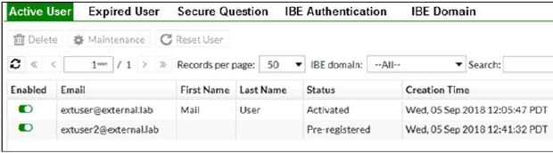
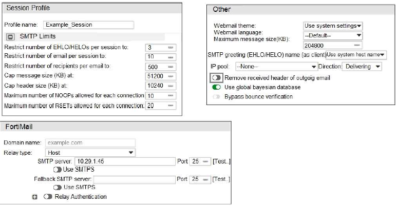
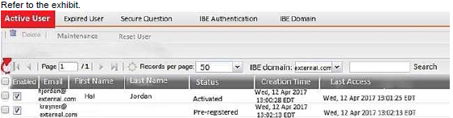
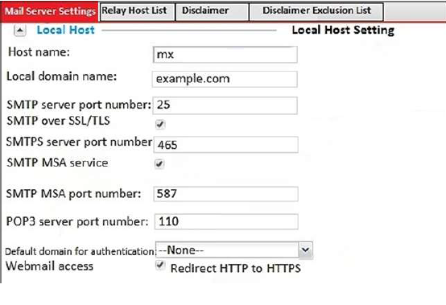

Which two actions did FortiMail take on this email message? (Choose two.)
FortiMail is configured with the protected domain example.com. Which two envelope addresses will require an access receive rule, to relay for unauthenticated senders? (Choose two.)
Which two FortiMail antispam techniques can you use to combat zero-day spam? (Choose two.)
Why was the IP address blocked by FortiMail?
A. The IP address had consecutive SMTPS login failures to FortiMail.
B. The IP address had consecutive telnet login failures to FortiMail.
C. The IP address had consecutive SSH login failures to FortiMail.
D. The IP address had consecutive HTTPS login failures to FortiMail.
In which two places can the maximum email size be overridden on FortiMail? (Choose two.)
A FortiMail administrator is concerned about cyber criminals attempting to get sensitive information from employees using whaling phishing attacks. What option can the administrator configure to prevent these types of attacks?
A. Dictionary profile with predefined smart identifiers
B. Content disarm and reconstruction
C. Bounce tag verification
D. Impersonation analysis
Which two statements about this SMTP session are true? (Choose two.)
While reviewing logs, an administrator discovers that an incoming email was processed using policy IDs 0:4:9:INTERNAL. Which two scenarios will generate this policy ID? (Choose two.)
What are two disadvantages of setting the Dictionary and DLP scan rule aggressiveness too high? (Choose two.)
A FortiMail is configured with the protected domain example.com. On this FortiMail, which two envelope addresses are considered incoming? (Choose two.)
After creating the policy shown in the exhibit, an administrator discovers that clients are able to send unauthenticated email using SMTP. What must the administrator do to enforce authentication?
A. Configure an access delivery rule to enforce authentication
B. Move the recipient policy to the top of the list
C. Configure an access receive rule to verify authentication status
D. Configure a matching IP policy with SMTP authentication and exclusive flag enabled
An administrator must enforce authentication on FML-1 for all outbound email from the example.com domain. Which two settings should be used to configure the access receive rule? (Choose two.)
Which two features are available when you enable HA centralized monitoring on FortiMail? (Choose two.)
Which statement describes the pre-registered status of the IBE user extuser2@external.lab? 
A. The user account has been de-activated, and the user must register again the next time they receive an IBE email.
B. The user was registered by an administrator in anticipation of IBE participation.
C. The user has completed the IBE registration process, but has not yet accessed their IBE email.
D. The user has received an IBE notification email, but has not accessed the HTTPS URL or attachment yet.
Which two message types will trigger this DLP scan rule? (Choose two.)
Which IP address should the DNS MX record for the FortiMail active-passive cluster resolve to?
A. 172.16.32.1
B. 172.16.32.57
C. 172.16.32.55
D. 172.16.32.56
It is recommended that you configure which three access receive settings to allow outbound email from the example.com domain on FML-1? (Choose three.)
Why does the last field show SYSTEM in the Policy ID column?
A. The email matched a system-level authentication policy.
B. It is an inbound email.
C. The email was dropped by a system blocklist.
D. The email did not match a recipient-based policy.
Which statement about how impersonation analysis identifies spoofed email addresses is correct?
A. It uses DMARC validation to detect spoofed addresses.
B. It maps the display name to the correct recipient email address.
C. It uses SPF validation to detect spoofed addresses.
D. It uses behavior analysis to detect spoofed addresses.
Which configuration change must you make to prevent the banner from displaying the FortiMail serial number?
A. Add a protected domain
B. Configure a local domain name
C. Change the operation mode
D. Change the host name
undeliverable email messages. After searching the logs, the administrator identifies that the DSNs were not generated as a result of any outbound email sent from the protected domain. Which FortiMail antispam technique can the administrator use to prevent this scenario?
A. Spam outbreak protection
B. Spoofed header detection
C. Bounce address tag validation
D. FortiGuard IP Reputation
Which two statements about the MTAs of the domain example.com are true? (Choose two.)
An organization has different groups of users with different needs in email functionality, such as address book access, mobile device access, email retention periods, and disk quotas. Which FortiMail feature specific to server mode can be used to accomplish this?
A. Resource profiles
B. Address book management options
C. Access profiles
D. Domain-level service settings
Which two statements describe the built-in bridge on a FortiMail operating in transparent mode? (Choose two.)
For the transparent mode FortiMail shown in the exhibit, which two sessions are considered incoming sessions? (Choose two.)
Which two statements about email messages sent from User A to User B are correct? (Choose two.)
Which message size limit will FortiMail apply to the outbound email? 
A. 51200
B. 10240
C. 1024
D. 204800
Which item is a supported one-time secure token for IBE authentication?
A. Certificate
B. FortiToken
C. Security question
D. SMS
Based on the logs shown in the exhibit, which two statements are true? (Choose two.)
What is the expected outcome of SMTP sessions sourced from FML1 and destined for FML2?
A. FML1 will successfully establish an SMTPS session with FML2.
B. FML1 will send the STARTTLS command in the SMTP session, which will be rejected by FML2.
C. FML1 will attempt to establish an SMTPS session with FML2, but revert to standard SMTP.
D. FML1 will fail to establish any sessions with FML2.
Which statement describes the impact of setting the User inactivity expiry time option to 90 days?
A. IBE user accounts will expire after 90 days of inactivity, and must register again to access new IBE email message
B. Registered IBE users have 90 days from the time they receive a notification email message to access their IBE email
C. After initial registration, IBE users can access the secure portal without authenticating again for 90 days
D. First time IBE users must register to access their email within 90 days of receiving the notification email message
Which two statements about the access receive rule are true? (Choose two.)
Which firmware upgrade method for an active-passive HA cluster ensures service outage is minimal, and there are no unnecessary fail-overs?
A. Break the cluster, upgrade the units independently, and then form the cluster
B. Upgrade both units at the same time
C. Upgrade the standby unit, and then upgrade the active unit
D. Upgrade the active unit, which will upgrade the standby unit automatically
Which two statements about the mail server settings are true? (Choose two.)
Which two statements about how the transparent mode FortiMail device routes email for the example.com domain are true? (Choose two.)
Which two CLI commands, if executed, will erase all data on the log disk partition? (Choose two.)
If you are using the built-in MTA to process email in transparent mode, which two statements about FortiMail behavior are true? (Choose two.)
Which configuration change must you make to block an offending IP address temporarily?
A. Add the offending IP address to the system block list
B. Add the offending IP address to the user block list
C. Add the offending IP address to the domain block list
D. Change the authentication reputation setting status to Enable
Which three statements about SMTPS and SMTP over TLS are true? (Choose three.)
An administrator has enabled the sender reputation feature in the Example_Session profile on FML-1. After a few hours, the deferred queue on the mail server starts filling up with undeliverable email. What two changes must the administrator make to fix this issue? (Choose two.)
Examine the FortiMail topology and access receive rule shown in the exhibit; then answer the question below. An administrator must enforce authentication on FML-1 for all outbound email from the example.com domain. Which of the following settings should be used to configure the access receive rule? (Choose two.)
An administrator has enabled the sender reputation feature in the Example_Session profile on FML-1. After a few hours, the deferred queue on the Mail Server started filing up with undeliverable email. What changes should the administrator make to fix this issue? (Choose two.)
Which FortiMail option removes embedded code components in Microsoft Word, while maintaining the original file format?
A. Behavior analysis
B. Impersonation analysis
C. Content disarm and reconstruction
D. Header analysis
While reviewing logs, an administrator discovers that an incoming email was processed using policy IDs 0:4:9 Which two scenarios will generate this policy ID? (Choose two.)
FortiMail is configured with the protected domain example.com. Which two envelope addresses will require an access receive rule, to relay for unauthenticated senders? (Choose two.)
What two archiving actions will FortiMail take when email messages match these archive policies? (Choose two.)
What three configuration steps are required to enable DKIM signing for outbound messages on FortiMail?
An administrator sees that an excessive amount of storage space on a FortiMail device is being used up by quarantine accounts for invalid users. The FortiMail is operating in transparent mode. Which two FortiMail features can the administrator configure to tackle this issue? (Choose two.)
What are two expected outcomes if FortiMail applies this antivirus action profile to an email?
MTA-1 is delivering an email intended for User 1 to MTA-2. Which two statements about protocol usage between the devices are true? (Choose two.)
Which two antispam techniques query FortiGuard for rating information? (Choose two.)
A FortiMail administrator is investigating a sudden increase in DSNs being delivered to the protected domain for undeliverable email messages. After searching the logs, the administrator identifies that the DSNs were not generated as a result of any outbound email sent from the protected domain. Which FortiMail antispam technique can the administrator use to prevent this scenario?
A. Spam outbreak protection
B. Bounce address tag validation
C. Spoofed header detection
D. FortiGuard IP Reputation
The exhibit shows a FortiMail active-passive setup. Which three actions are recommended when configuring the primary FortiMail HA interface? (Choose three.)
While testing outbound MTA functionality, an administrator discovers that all outbound email is being processed using policy IDs 1:2:0. Which two reasons explain why the last policy ID value is 0? (Choose two.)
An organization has different groups of users with different needs in email functionality, such as address book access, mobile device access, email retention periods, and disk quotas. Which FortiMail feature specific to server mode can be used to accomplish this?
A. Resource profiles
B. Domain-level service settings
C. Access profiles
D. Address book management options
Examine the FortiMail topology and access receive rule shown in the exhibit; then answer the question below An administrator must enforce authentication on FML-1 for all outbound email from the example.com domain. Which of the following settings should be used to configure the access receive rule? (Choose two.)
Which of the following statements are true regarding the transparent mode FortiMail’s email routing for the example.com domain? (Choose two.)
Examine the FortiMail archiving policies shown in the exhibit; then answer the question below. What is the expected outcome if FortiMail applies this action profile to an email? (Choose two.)
Examine the FortiMail user webmail interface shown in the exhibit; then answer the question below. Which one of the following statements is true regarding this server mode FortiMail’s configuration?
A. The protected domain-level service settings have been modified to allow access to the domain address book
B. This user’s account has a customized access profile applied that allows access to the personal
C. The administrator has not made any changes to the default address book access privileges
D. The administrator has configured an inbound recipient policy with a customized resource profile
What IP address should the DNS MX record for this deployment resolve to?
A. 172.16.32.1
B. 172.16.32.57
C. 172.16.32.55
D. 172.16.32.56
Examine the FortiMail recipient-based policy shown in the exhibit; then answer the question below. After creating the policy, an administrator discovered that clients are able to send unauthenticated email using SMTP. What must be done to ensure clients cannot send unauthenticated email?
A. Configure a matching IP policy with SMTP authentication and exclusive flag enabled
B. Move the recipient policy to the top of the list
C. Configure an access receive rule to verify authentication status
D. Configure an access delivery rule to enforce authentication
Examine the nslookup output shown in the exhibit; then answer the question below.Identify which of the following statements is true regarding the example.com domain’s MTAs.(Choose two.)
A. The user was registered by an administrator in anticipation of IBE participation
B. The user has completed the IBE registration process but has not yet accessed their IBE email
C. The user has received an IBE notification email, but has not accessed the HTTPS URL or attachmentyet
D. The user account has been de-activated, and the user must register again the next time they receive an IBE email
Which of the following parameters are recommended for the Primary FortiMail’s HA interface configuration? (Choose three.)
Examine the FortMail mail server settings shown in the exhibit; then answer the question below.
Which of the following statements is true regarding this configuration?(Choose two.)
Which of the following statements are true regarding FortiMail’s behavior when using the built-in MTA to process email in transparent mode? (Choose two.)
Which size limit will FortiMail apply to outbound email?
A. 204800
B. 51200
C. 1024
D. 10240
Which of the following statements are true? (Choose two.)
Examine the FortiMail topology and IP-based policy shown in the exhibit; then answer the question below.
An administrator has enabled the sender reputation feature in the Example_Session profile on FML- 1. After a few hours, the deferred queue on the Mail Server started filing up with undeliverable email. What changes should the administrator make to fix this issue? (Choose two.)
Which two statements about the access receive rule are true? (Choose two.)
What are the configuration steps to enable DKIM signing for outbound messages on FortiMail? (Choose three.)
Which interface will FortiMail use to forward an email message destined for 10.1.100.252?
A. port2
B. port4
C. port3
D. port1
Examine the message column of a log cross search result of an inbound email shown in the exhibit; then answer the question below
Which statement describes the impact of setting the User inactivity expiry time option to 90 days?
A. IBE user accounts will expire after 90 days of inactivity, and must register again to access new IBE email message
B. Registered IBE users have 90 days from the time they receive a notification email message to access their IBE email
C. After initial registration, IBE users can access the secure portal without authenticating again for 90 day
D. First time IBE users must register to access their email within 90 days of receiving the notification email message
which statement about clients matching this session profile is true
A. Clients cannot send email to more that five recipients every 30 minutes
B. A client cannot establish more than 1200 connections during a 30 minute period
C. Email will be delayed for 30 minutes if a connection remains idle for more than 20 seconds
D. if a client establishes more than five concurrent connections they will be delayed for 10 seconds
A FortiMail administrator is concerned about cyber criminals attempting to get sensitive information from employees using whaling phishing attacks. What option can the administrator configure to prevent these types of attacks?
A. Impersonation analysis
B. Bounce tag verification
C. Content disarm and reconstruction
D. Dictionary profile with predefined smart identifiers
For the transparent mode FortiMail shown in the exhibit, which two sessions are considered incoming sessions? (Choose two.)
An administrator wants to maintain a centralized backup for mail data in config-only HA mode Which option can the administrator configure on FortiMail to achieve this outcome?
A. Enable backup mail data directories in the HA configuration for each member of the cluster
B. Configure each member of the cluster to send the mail data to the primary FortiMail
C. Configure each member of the cluster to store data on a NAS server that supports NFS connections
D. Enable backup MTA queue directories in the HA configuration for each member of the cluster
Which statement describes the impact of the maximum size (KB) for push method value?
A. If the IBE attachment size exceeds the maximum size value pull delivery will be used
B. If the IBE attachment size exceeds the maximum size value AES 256 will be used
C. If the IBE attachment size exceeds the maximum size value TLS will be used
D. If the IBE attachment size exceeds the maximum size value the email message will not be deliver
Which configuration change must you make to block an offending IP address temporarily?
A. Add the offending IP address to the system block list
B. Add the offending IP address to the user block list
C. Add the offending IP address to the domain block list
D. Change the authentication reputation setting status to Enable
Which FortiMail antispam technique can you use to combat zero-day spam?(Choose two)
It is recommended that you configure which three access receive settings to allow outbound email from the example.com domain on FML-1? (Choose three.)
Which two statements about the access receive rule are true? (Choose two.)
what does the scan timeout value specify ?
A. How long FortiMail wait to send a file or URL to FortiSandbox
B. How often FortiMail will query FortiSandbox for a scan result
C. How often the local scan results cache will expire on FortiMail
D. How long FortiMail will wait for a scan result from FortiSandbox
 Which statement describes the pre-registered status of the IBE user extuser2@external.lab?
A. The user has received an IBE notification email, but has not accessed the HTTPS URL or attachment yet.
B. The user account has been de-activated, and the user must register again the next time they receive an IBE email.
C. The user was registered by an administrator in anticipation of IBE participation
D. The user has completed the IBE registration process, but has not yet accessed their IBE email.
An organization has different groups of users with different needs in email functionality, such as address book access, mobile device access, email retention periods, and disk quotas. Which FortiMail feature specific to server mode can be used to accomplish this?
A. Resource profiles
B. Domain-level service settings
C. Access profiles
D. Address book management options
Which two message types will trigger this DLP scan rule? (Choose two.)
Which two statements about email messages sent from User A to User B are correct? (Choose two.)
Examine the message column of a log cross search result of an inbound email shown in the exhibit; then answer the question below Based on logs, which of the following statements are true? (Choose two.)
While testing outbound MTA functionality, an administrator discovers that all outbound email is being processed using policy IDs 1:2:0. Which two reasons explain why the last policy ID value is 0? (Choose two.)
Which statement about how impersonation analysis identifies spoofed email addresses is correct?
A. It uses behavior analysis to detect spoofed addresses
B. It maps the display name to the correct recipient email address
C. It uses DMARC validation to detect spoofed addresses
D. It uses SPF validation to detect spoofed addresses.
Which two actions did FortiMail take on this email message ?(Choose two)
What does the Scan timeout value specify
Which two statements about email messages sent from User A to User B are correct? (Choose two)
Which statement about how impersonation analysis identifies spoofed email addresses is correct?
A. It uses behavior analysis to detect spoofed addresses
B. It uses DMARC validation to detect spoofed addresses
C. It uses SPF validation to detect spoofed addresses
D. It maps the display name to the correct recipient email address
Which two statements describe the built-in bridge on a FortiMail operating in transparent mode? (Choose two)
Which two statements about this SMTP session are true?(Choose two)
Which configuration change must you make to prevent the banner from displaying the ForiMail serial number
A. Add a protected domain
B. Configure a local domain name
C. Change the operation mode
D. Change the host name
What is the expected outcome of SMTP sessions sourced from FML1 and destined for FML2 ?
A. FML1 will attempt to establish an SMTPS session with FML2 but revert to standard SMTP
B. FML1 will faild to establish any sessions with FML2
C. FML1 will successfully establish an SMTPS session with FML2
D. FML1 will send the STARTTLS command in the SMTP session, which will be rejected by FML2
An organization has different groups of users with different needs in email functionality, such as address book access, mobile device access, email retention periods, and disk quotas. Which FortiMail feature specific to server mode can be used to accomplish this?
A. Resource profiles
B. Domain-level service settings
C. Access profiles
D. Address book management options
Examine the nslookup output shown in the exhibit; then answer the question below. Identify which of the following statements is true regarding the example.com domain's MTAs. (Choose two.)
A FortiMail is configured with the protected domain "example.com". For this FortiMail, which of the following envelope addresses are considered incoming? (Choose two.)
Which of the following CLI commands, if executed, will erase all data on the log disk partition? (Choose two.)
FortiMail is configured with the protected domain "example.com". Identify which of the following envelope addresses will require an access receive rule to relay for unauthenticated senders? (Choose two.)
Which IP address should the DNS MX record for the FortiMail active-passive cluster resolve to?
A. 172.16.32.57
B. 172.16.32.1
C. 172.16.32.55
D. 172.16.32.56
Which two statements about this SMTP session are true? (Choose two.)
A FortiMail administrator is investigating a sudden increase in DSNs being delivered to the protected domain for undeliverable email messages. After searching the logs, the administrator identifies that the DSNs were not generated as a result of any outbound email sent from the protected domain. Which FortiMail antispam technique can the administrator use to prevent this scenario?
A. Spam outbreak protection
B. Bounce address tag validation
C. Spoofed header detection
D. FortiGuard IP Reputation
Examine the FortiMail recipient-based policy shown in the exhibit; then answer the question below After creating the policy, an administrator discovered that clients are able to send unauthenticated email using SMTP. What must be done to ensure clients cannot send unauthenticated email?
A. Configure a matching IP policy with SMTP authentication and exclusive flag enabled
B. Move the recipient policy to the top of the list
C. Configure an access receive rule to verify authentication status
D. Configure an access delivery rule to enforce authentication
Examine the FortiMail session profile and protected domain configuration shown in the exhibit; then answer the question below.
A. 204800
B. 51200
C. 1024
D. 10240
Refer to the exhibit.
A. Add a protected domain
B. Change the operation mode
C. Configure a local domain name
D. Change the host name
Refer to the exhibit
A. Add a protected domain
B. Change the operation mode
C. Configure a local domain name
D. Change the host name
An administrator wants to maintain a centralized backup for mail data in config-only HA mode Which option can the administrator configure on FortiMail to achieve this outcome ?
A. Enable backup mail data directories in the HA configuration for each member of the cluster
B. Configure each member of the cluster to send the mail data to the primary FortiMail
C. Configure each member of the cluster to store mail data on a NAS server that supports NFS connections
D. Enable backup MTA queue directories in the HA configuration for each member of the clusteR
Why was the IP address blocked by FortiMail?
A. The IP address had consecutive SSH login failures to FortiMail
B. The IP address had consecutive telnet login failures to FortiMail
C. The IP address had consecutive SMTPS login failures to FortiMail
D. The IP address had consecutive HTTPS login failures to FortiMail
MTA 1 is delivering an email intended for User 1 to MTA 2. Which of the following statements about protocol usage between the devices are true? (Choose two.)
which statement describes the impact of the maximum size (KB) for push method value if the IBE attachment size exceeds the maximum size value?
A. AES 256 will be used
B. The email message will not be delivered
C. Pull delivery will be used
D. TLS will be used
Which license do you need to apply to a FortiMail device to enable the HA centralized monitoring features ?
A. MSSP license
B. Cloud gateway license
C. Enterprise License
D. Office 365 protection License
Which two statements about how the transparent mode FortiMail device routes email for the example.com domain are true? (Choose two.)
A. If incoming email messages are undeliverable, FML-1 can queue them to retry later
B. If outgoing email messages are undeliverable, FM-1 can queue them to retry later
C. FML-1 will use the built-in MTA for outgoing sessions
D. FML-1 will use the transparent proxy for incoming sessions
few hours, the deferred queue on the Mail Server started filing up with undeliverable email. What changes should the administrator make to fix this issue? (Choose two.)
What will happen to an email that triggers spam outbreak protection?
A. The email is held in a deferred queue for a period of time
B. The email is rejected
C. The email is logged
Which two message types will trigger this DLP scan rule? (Choose two.)
Which two antispam techniques query FortiGuard for rating information? (Choose two.)
What are two reasons for having reliable DNS servers configured on FortiMail?(Choose two)
7 What three configuration steps are required to enable DKIM signing for outbound messages on FortiMail?(Choose three.)
The exhibit shows a FortiMail active-passive setup. Which three actions are recommended when configuring the primary FortiMail HA interface? (Choose three.)
Examine the FortiMail recipient-based policy shown in the exhibit; then answer the question below. After creating the policy, an administrator discovered that clients are able to send unauthenticated email using SMTP. What must be done to ensure clients cannot send unauthenticated email?
A. Configure a matching IP policy with SMTP authentication and exclusive flag enabled
B. Move the recipient policy to the top of the list
C. Configure an access receive rule to verify authentication status
D. Configure an access delivery rule to enforce authentication
Which two statements about the mail server settings are true? (Choose two.) 
A FortiMail is configured with the protected domain example.com. On this FortiMail, which two envelope addresses are considered incoming? (Choose two.)
Examine the message column of a log cross search result of an inbound email shown in the exhibit; then answer the question below Based on logs, which of the following statements are true? (Choose two.)
what does the scan timeout value specify?
A. How long FortiMail will wait to send a file URI to FortSandBox
B. How often the local scan results cache will expire on FortiMail
C. How long FortiMail will wait for a scan result from FortiSandBox
D. How ofteb FortiMail will query FortiSandBox for a scan rersult
What two archiving actions will FortiMail take when email messages match these archive policies? (Choose two.)
Which two statements about the access receive rule are true? (Choose two.)
An administrator must enforce authentication on FML-1 for all outbound email from the example.com domain. Which two settings should be used to configure the access receive rule? (Choose two.)
An organization has different groups of users with different needs in email functionality, such as address book access, mobile device access, email retention periods, and disk quotas. Which FortiMail feature specific to server mode can be used to accomplish this?
A. Resource profiles
B. Domain-level service settings
C. Access profiles
D. Address book management options
A FortiMail administrator is investigating a sudden increase in DSNs being delivered to the protected domain for undeliverable email messages. After searching the logs, the administrator identifies that the DSNs were not generated as a result of any outbound email sent from the protected domain. Which FortiMail antispam technique can the administrator use to prevent this scenario?
A. Spam outbreak protection
B. Bounce address tag validation
C. Spoofed header detection
D. FortiGuard IP Reputation
If you are using the built-in MTA to process email in transparent mode, which two statements about FortiMail behavior are true? (Choose two.)
Which FortiSandbox type can be configured on FortiMail, to guarantee dedicated FortiSandbox service and high performance?
A. Cloud
B. Dynamic Cloud
C. Premium Cloud
D. Enhanced Cloud
Which statement describes the impact of setting the User inactivity expiry time option to 90 days?
A. IBE user accounts will expire after 90 days of inactivity, and must register again to access new IBE email message
B. Registered IBE users have 90 days from the time they receive a notification email message to access their IBE email
C. After initial registration, IBE users can access the secure portal without authenticating again for 90 days
D. First time IBE users
What are two expected outcomes if FortiMail applies this antivirus action profile to an email? (Choose two.)
FortiMail is configured with the protected domain example.com. Which two envelope addresses will require an access receive rule, to relay for unauthenticated senders? (Choose two.)
While testing outbound MTA functionality, an administrator discovers that all outbound email is being processed using policy IDs 1:2:0. Which two reasons explain why the last policy ID value is 0? (Choose two.)
Which statement about SMTPS and SMTP over TLS are true?
A. SMTP over TLS connections are entirely encrypted and initiated on port 465
B. SMTPS encrypts the identities of both the sender and receiver
C. The STARTTLS command is used to initiate SMTP over TLS
D. SMTPS encrypts only the body of the email message